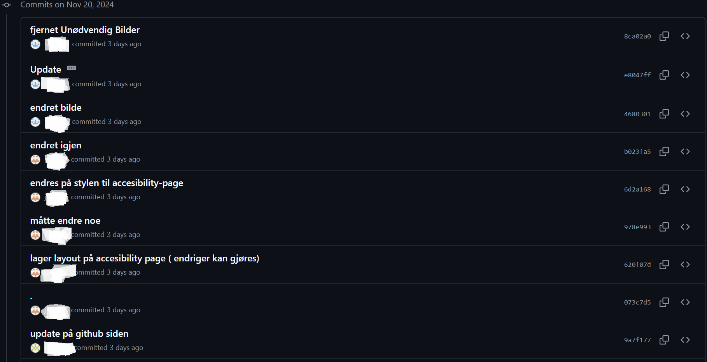
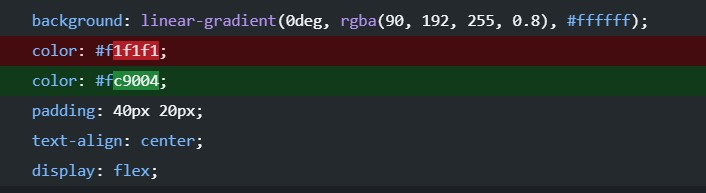

GitHub Collaboration
GitHub is an amazing tool for developers who work together on coding projects. It is a cloud-based platform that allows developers to store, share, and collaborate on code. Developers can work together on a single project, track changes, and manage code efficiently. The purpose of this assignment is to document our collaboration using GitHub by illustrating images of commit history and specific changes. Furthermore, it includes writing about the collaborative aspects of repositories like GitHub and showing a list of advantages in a team setting.
GitHub records every small change. Recording every small change in a commit secures a detailed log,
helping the team track progress and resolve issues efficiently.
This approach is much better than managing larger commits, as frequent commits simplify the process of identifying a problem in the future.
Below is an image that demonstrates how our group has collaborated efficiently on GitHub through consistent commits.
The image shows multiple small changes made that day, with contributions of most of the members of the team.
The purpose of this assignment is to document our collaboration using GitHub and the image below is a good example.

Specific change
In our GitHub collaboration, we have made alot of specific changes. The picture below shows a change where the font sizing changed to make the font more appealing for our website

Benifits of github
- GitHub makes it easier to document projects effectively.
- It allows your work to be publicly accessible.
- Complete history is always available.
- Supports unlimited collaboration for both small and large projects.
Example
This is a good example of the benefits of GitHub. This shows one of the members changing colors of the activity page. It allows us to track even the smallest changes, making collaboration easier by clearly showing what the change was and how it differed from earlier versions, keeping everyone on the same page.
Collaboration within repositories on GitHub went well and was a good beginner experience. The platform taught us how to work together as a team. We also had several physical meetings to discuss progress and plan the next steps, which improved our teamwork. GitHub provided a good environment for group work but also that we met physically made it easier to resolve conflict in github and help the other members to understand each others code. When we understood and were comfortable with github we split part Ultimately, the project was great success. Our collaboration was smooth, and we worked well together throughout the project.